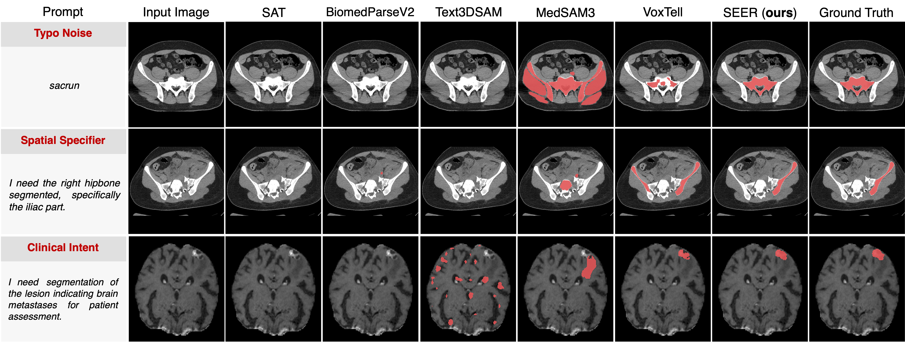

Free-text promptable 3D medical image segmentation offers an intuitive and clinically flexible interaction paradigm. However, current methods are highly sensitive to linguistic variability: minor changes in phrasing can cause substantial performance degradation despite identical clinical intent. Existing approaches attempt to improve robustness through stronger vision-language fusion or larger vocabularies, yet they lack mechanisms to consistently align ambiguous free-form expressions with anatomically grounded representations.
We propose Skill-Evolving groundEd Reasoning (SEER), a novel framework for free-text promptable 3D medical image segmentation that explicitly bridges linguistic variability and anatomical precision through a reasoning-driven design. First, we curate the SEER-Trace dataset, which pairs raw clinical requests with image-grounded, skill-tagged reasoning traces, establishing a reproducible benchmark. Second, SEER constructs an evidence-aligned target representation via a vision-language reasoning chain that verifies clinical intent against image-derived anatomical evidence, thereby enforcing semantic consistency before voxel-level decoding. Third, we introduce SEER-Loop, a dynamic skill-evolving strategy that distills high-reward reasoning trajectories into reusable skill artifacts and progressively integrates them into subsequent inference, enabling structured self-refinement and improved robustness to diverse linguistic expressions.
Extensive experiments demonstrate superior performance of SEER over state-of-the-art baselines. Under linguistic perturbations, SEER reduces performance variance by 81.94% and improves worst-case Dice by 18.60%.
We evaluate SEER on two out-of-distribution benchmarks and compare it with strong 3D medical segmentation baselines under both native label prompting and realistic free-text clinical prompting.
Partial-OOD / domain-shift evaluation. Brain anatomy remains within the seen anatomical domain, while institutional sources and target labels are outside the training coverage.
Strict OOD evaluation. Both pelvic anatomy and pelvic bone target labels are absent from SEER-Trace reasoning supervision and target coverage.
1 Label prompting mode
Baselines are evaluated using their natively supported, predefined label prompting interfaces.
2 Free-text prompting mode
Baselines are evaluated using realistic, linguistically diverse clinical requests introduced in SEER-Trace.
Performance comparison under label and free-text prompting modes. Higher Dice and Worst Dice are better; lower standard deviation indicates better robustness across free-text prompt variants.
| Dataset | Method | Label Prompting | Free-text Prompting | ||
|---|---|---|---|---|---|
| Dice ↑ | Dice ↑ | Worst Dice ↑ | Std. ↓ | ||
| BrainMetShare | SAT | 22.16 | 0.69 | 0.00 | 2.53 |
| BiomedParseV2 | 18.66 | 2.53 | 0.00 | 7.27 | |
| Text3DSAM | 0.10 | 0.41 | 0.00 | 0.93 | |
| MedSAM3 | 11.33 | 16.62 | 10.56 | 5.17 | |
| VoxTell | 48.19 | 52.15 | 46.71 | 3.35 | |
| SEER (Ours) | 51.70 | 53.83 | 51.44 | 1.67 | |
| PENGWIN | SAT | 96.05 | 0.01 | 0.00 | 0.13 |
| BiomedParseV2 | 1.35 | 8.53 | 0.00 | 7.50 | |
| Text3DSAM | 24.75 | 0.01 | 0.00 | 0.16 | |
| MedSAM3 | 18.26 | 5.75 | 3.67 | 6.40 | |
| VoxTell | 97.59 | 92.26 | 79.34 | 7.49 | |
| SEER (Ours) | 97.56 | 97.39 | 95.47 | 0.98 | |
Under three clinically plausible free-text prompt variants, SEER produces consistent, on-target masks across all variants, reflecting evidence-aligned disambiguation from the image. In contrast, baseline outputs are highly prompt-sensitive in free-text prompting mode, frequently drifting to off-target regions or collapsing to degenerate predictions, such as empty or fragmented masks, under minor wording changes.

@article{zhang2026seer,
title = {Skill-Evolving Grounded Reasoning for Free-Text Promptable 3D Medical Image Segmentation},
author = {Zhang, Tongrui and Wang, Chenhui and Li, Yongming and Chen, Zhihao and Zhan, Xufeng and Shan, Hongming},
journal = {arXiv preprint arXiv:2603.08215},
year = {2026}
}